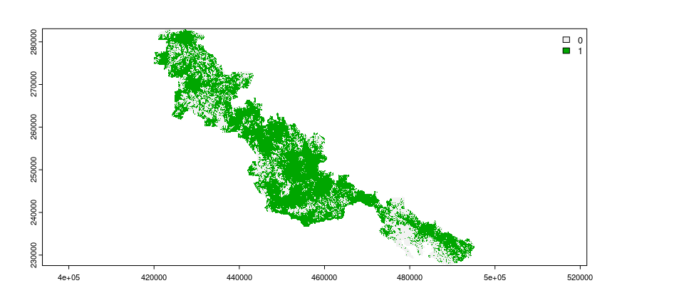
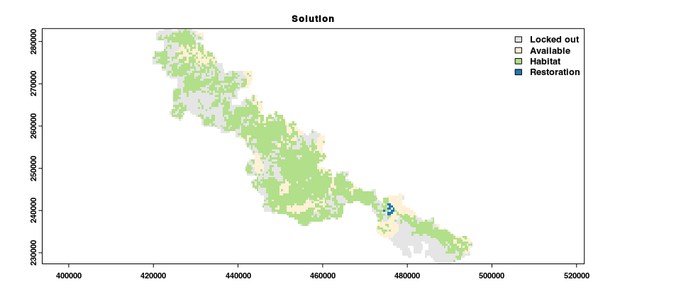

Overview
The restoptr R package provides a flexible framework for ecological restoration planning. It aims to identify priority areas for restoration efforts using optimization algorithms (based on Justeau-Allaire et al. 2021). Priority areas can be identified by maximizing landscape indices, such as the effective mesh size (Jaeger 2000), or the integral index of connectivity (Pascual-Hortal & Saura 2006). Additionally, constraints can be used to ensure that priority areas exhibit particular characteristics (e.g., ensure that particular places are not selected for restoration, ensure that priority areas form a single contiguous network). Furthermore, multiple near-optimal solutions can be generated to explore multiple options in restoration planning. The package leverages the Choco-solver software to perform optimization using constraint programming (CP) techniques (Prud’homme et al. 2016).
Installation
Package installation
The latest official version of the restoptr R package can be installed from the Comprehensive R Archive Network (CRAN) using the following R code.
install.packages("restoptr", repos = "https://cran.rstudio.com/")Alternatively, the latest developmental version can be installed using the following R code. Please note that while developmental versions may contain additional features not present in the official version, they may also contain coding errors.
if (!require(remotes)) install.packages("remotes")
remotes::install_github("dimitri-justeau/restoptr")System dependencies
The packages requires a Java Runtime Environment (JRE), version 8 or higher. Below we provide platform-specific instructions to install it.
Windows
Please install the latest Java Runtime Environment for Windows (see Oracle JDK, OpenJDK, or GraalVM). You also need to install Maven. After downloading the file, please run installer to install Java on your system. You will also need to ensure that the PATH environmental variable if configured so that R can access Java. restoptr relies on rJava for the communication between R and Java. If you have any trouble during the installation of restopt due to rJava, please refer to rJava’s documentation: https://rforge.net/rJava/index.html.
Ubuntu
For recent versions of Ubuntu (18.04 and later), the Java libraries are available through official repositories. They can be installed using the following system commands.
sudo apt-get install default-jdkIf you want to install a specific JRE version, please follow instructions from Oracle, OpenJDK, or GraalVM.
MacOS
The easiest way to install the Java libraries is using HomeBrew. After installing HomeBrew, the Java libraries can be installed using the following system commands.
brew install openjdkPlease note that you might also need to ensure that the PATH environmental variable if configured so that R can access Java.
Building the Java core library from source (optional)
The package relies on a core Java library called restopt. This Java library handles the constrained optimization process via the Choco-solver software. Although this library is automatically included with the package, it can be manually compile from source if needed. Please note that this step is entirely optional, and is not needed to install the package. To compile the Java library, a the Maven software needs to be installed as well as a Java Development Kit (JDK) (version 8+) is required (e.g., see Oracle JDK, OpenJDK, or GraalVM). After installing these dependencies, the following procedures can be used to compile the Java library and it along with the package.
First clone the repository and update the source code.
git clone https://github.com/dimitri-justeau/restoptr.git
cd restoptr
git submodule update --init --recursive
git pull --recurse-submodulesNext, compile the core Java library with Maven.
cd restopt
mvn clean package -DskipTestsNext, copy the resulting Java library (.jar) file into java directory.
cp target/restopt-*.jar ../java/Finally, the package can be installed with the newly compiled Java library using the following R command.
if (!require(remotes)) install.packages("remotes")
remotes::install_local(".")Usage
Here we will provide a short tutorial on using the restoptr R package to identify priority areas for restoration. As part of this tutorial, we will use an example dataset that is distributed with the package (obtained from Justeau-Allaire et al. 2021). This example dataset contains data for prioritizing forest restoration efforts within a protected area in New Caledonia. We will begin the tutorial by loading the package. If you haven’t already, please install the package (see above for installation instructions).
To identify priorities for restoration, we require information on the location of places that do and do not currently contain suitable habitat. We will now import data to describe which places within the protected area contain forest habitat (imported as the habitat_data object). Specifically, this object is a spatial grid (i.e., raster layer). Each grid cell corresponds to a candidate place for restoration (termed planning unit), and their values indicate the absence or presence of forest within each planning unit (using values of zero and one, respectively).
# import data
habitat_data <- rast(
system.file("extdata", "habitat_hi_res.tif", package = "restoptr")
)
# preview data
print(habitat_data)## class : SpatRaster
## dimensions : 1867, 2713, 1 (nrow, ncol, nlyr)
## resolution : 27.9487, 29.74339 (x, y)
## extent : 419768.2, 495593.1, 227538.9, 283069.8 (xmin, xmax, ymin, ymax)
## coord. ref. : RGNC91-93 / Lambert New Caledonia (EPSG:3163)
## source : habitat_hi_res.tif
## name : habitat_hi_res
Restoration efforts are often limited in terms of the places where they can be implemented. For example, restoration efforts may not be feasible in dense cities. In our example, some places are not feasible for restoration because they cannot be accessed by existing tracks within the protected area. We will now import data to describe which places are not feasible for restoration (imported as the locked_out_data object). This object – similar to the habitat data – is a spatial grid. The grid cell values in this object indicate which planning units should be considered available for restoration or not (using values of zero and one, respectively).
# import data
locked_out_data <- rast(
system.file("extdata", "locked_out.tif", package = "restoptr")
)
# preview data
print(locked_out_data)## class : SpatRaster
## dimensions : 1867, 2713, 1 (nrow, ncol, nlyr)
## resolution : 27.9487, 29.74339 (x, y)
## extent : 419768.2, 495593.1, 227538.9, 283069.8 (xmin, xmax, ymin, ymax)
## coord. ref. : RGNC91-93 / Lambert New Caledonia (EPSG:3163)
## source : locked_out.tif
## name : layer
## min value : 1
## max value : 1
We now will build a restoration optimization problem (stored in the problem object). This object will specify all the data, settings, and optimization criteria for identifying priority areas. Specifically, we will initialize the problem with the habitat_data object to specify which planning units already contain suitable habitat (with the restopt_problem() function). To reduce run time, we will also initialize it with parameters to aggregate the spatial data (i.e., aggregation_factor and habitat_threshold). Next, we will specify that the objective function for the optimization process is to maximize connectivity based on the effective mesh size metric (with the set_max_mesh_objective() function). We will then specify constraints to ensure that the priority areas exhibit particular characteristics. These constraints will be used to ensure that (i) certain planning units are not selected for restoration (with the add_locked_out_constraint() function), (ii) the total amount of restored area should range between 90 and 220 ha (with the add_restorable_constraint() function), and (iii) limit the spatial extent of the priority areas to be within 2.4 km (with the add_compactness_constraint() function).
# build restoration optimization problem
problem <-
## initialize problem with habitat data
restopt_problem(
existing_habitat = habitat_data,
aggregation_factor = 16,
habitat_threshold = 0.7
) %>%
## set objective function is to maximize effective mesh size
set_max_mesh_objective() %>%
## add constraint to ensure that certain places are not selected
add_locked_out_constraint(locked_out_data) %>%
## add constraint to limit total amount of restored area
add_restorable_constraint(90, 220, unit = "ha") %>%
## add constraint to limit spatial extent of priority areas
add_compactness_constraint(2.4, unit = "km")
# preview problem
print(problem)## -----------------------------------------------------------------
## Restopt
## -----------------------------------------------------------------
## original habitat: habitat_hi_res.tif
## aggregation factor: 16
## habitat threshold: 0.7
## existing habitat: in memory
## restorable habitat: in memory
## -----------------------------------------------------------------
## objective: Maximize effective mesh size
## -----------------------------------------------------------------
## constraints:
## - locked out (data = in memory)
## - restorable (min_restore = 90, max_restore = 220, min_proportion = 1, unit = ha)
## - compactness (max_diameter = 2.4, unit = km)
## -----------------------------------------------------------------
## settings:
## - precision = 4
## - time_limit = 0
## - nb_solutions = 1
## - optimality_gap = 0
## -----------------------------------------------------------------After building the problem, we can solve it to identify priority areas for restoration (with the solve() function). The solution is a raster layer containing values that indicate if planning units: (0) were locked out, (1) do not contain existing habitat, (2) contain existing habitat, or (3) selected as a priority area for restoration.
# solve problem to identify priority areas
solution <- solve(problem)## Good news: the solver found 1 solution statisfying the constraints that was proven optimal ! (solving time = 1.18 s)
# preview solution
print(solution)## class : RestoptSolution
## dimensions : 117, 170, 1 (nrow, ncol, nlyr)
## resolution : 447.1792, 475.8943 (x, y)
## extent : 419768.2, 495788.7, 227390.1, 283069.8 (xmin, xmax, ymin, ymax)
## coord. ref. : RGNC91-93 / Lambert New Caledonia (EPSG:3163)
## source : memory
## name : Solution 1
## min value : Locked out
## max value : Restoration
# visualize solution
plot(
solution,
main = "Solution",
col = c("#E5E5E5", "#fff1d6", "#b2df8a", "#1f78b4"),
plg = list(x = "topright")
)
Finally, we can access additional information on the solution (with the get_metadata() function).
# access information on the solution
## N.B. spatial units are expressed as hectares
get_metadata(solution, area_unit = "ha")## min_restore total_restorable nb_planning_units nb_components diameter
## 1 219.3772 [ha] 219.3772 [ha] 15 3 2280.175 [m]
## optimality_proven search_state solving_time mesh_initial mesh
## 1 TRUE TERMINATED 1.156 13667.84 [ha] 14232.66 [ha]
## mesh_best
## 1 14232.66 [ha]This has just been a short taster of the package. For an extended tutorial on using the package, please refer to the vignette.
Citation
Please cite the restoptr R package when using it in publications. Although a new publication describing the package is in preparation; in the meantime, please use the following citation which outlines the methodology.
Justeau-Allaire, D., Vieilledent, G., Rinck, N., Vismara, P., Lorca, X., & Birnbaum, P. (2021). Constrained optimization of landscape indices in conservation planning to support ecological restoration in New Caledonia. Journal of Applied Ecology, 58(4), 744‑754.
Getting help
If you have any questions about using the package, suggestions for improvements, or if you detect a bug, please open an issue in online code repository. We designed the package to make it relatively easy to add new functionality, and would be delighted to hear from you.
References
Jaeger, J. A. G. (2000). Landscape division, splitting index, and effective mesh size: New measures of landscape fragmentation. Landscape Ecology, 15(2), 115-‑130.
Justeau-Allaire, D., Vieilledent, G., Rinck, N., Vismara, P., Lorca, X., & Birnbaum, P. (2021). Constrained optimization of landscape indices in conservation planning to support ecological restoration in New Caledonia. Journal of Applied Ecology, 58(4), 744‑-754.
Pascual-Hortal, L., & Saura, S. (2006). Comparison and development of new graph-based landscape connectivity indices: Towards the priorization of habitat patches and corridors for conservation. Landscape Ecology, 21(7), 959-‑967.
Prud’homme, C., Fages, J.-G., & Lorca, X. (2016). Choco Solver Documentation. {TASC, INRIA Rennes, LINA CNRS UMR 6241, COSLING S.A.S. Available at https://choco-solver.org/.